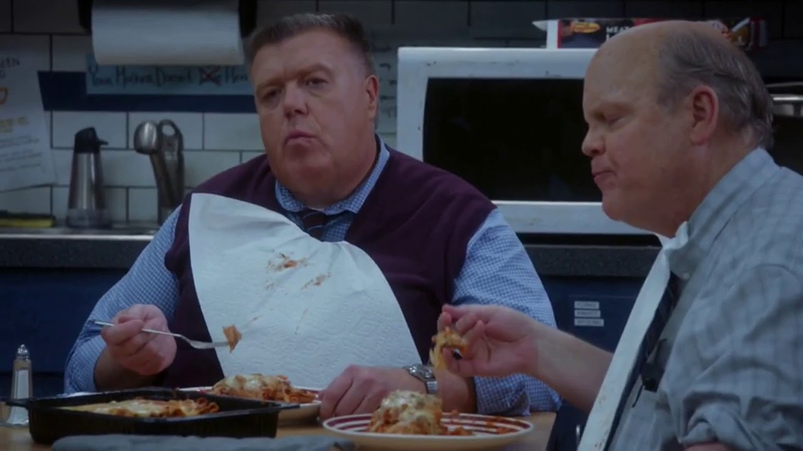

Lasagna

How to make it!
This is a quick, easy lasagna that tastes great and will have you questioning whether or not you went to cullinary school! This classic Italian dish is made with an easy meat sauce as the base and is layered with noodles and cheese. Great for feeding Hitchcock and Scully!
Ingredients
- 10 ounces of lasagna noodles
- 1 ½ pounds of lean ground beef
- 3 cups of cottage cheese
- 2 eggs
- 1 teaspoon garlic powder
- 2 tablespoons dried parsley
- salt and pepper to tastes
- 1 (6 ounce) can tomato paste
- 2 (6.5 ounce) cans tomato sauce
Steps
- Preheat oven to 375 degrees F (190 degrees C).
- Bring a large pot of lightly salted water to a boil. Add lasagna noodles and cook for 8 to 10 minutes or until al dente; drain.
- In a skillet, brown ground beef. Using a fork, mix cottage cheese, eggs, garlic powder, parsley, salt and pepper. In a separate bowl combine tomato paste and tomato sauce.
- In a 9x13 inch baking pan, layer noodles, ground beef, tomato sauce mixture and cottage cheese mixture. Two layers of each will fit. Cover with tin foil and bake for 30 minutes. Remove tin foil the last 8 minutes of baking time.